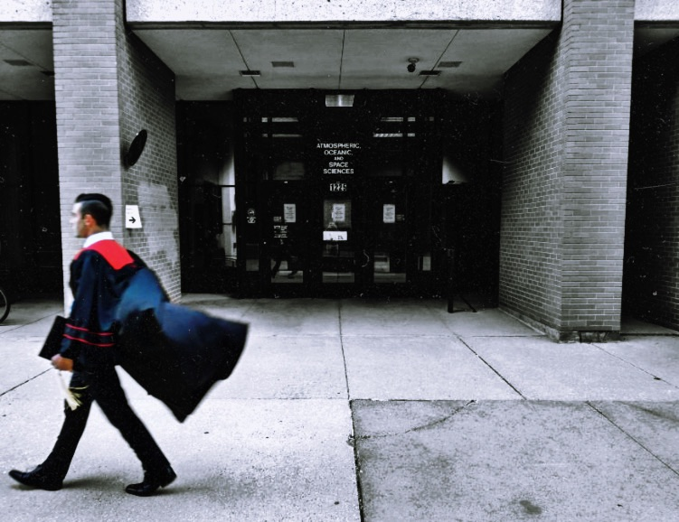

Welcome to the new site!
I'm glad you're here!
The home page has been refreshed to include news updates from the state and the country, in addition to the smoother look site-wide.
The continued work on this website, which began as a 10-point ATM OCN 452 lab/project, is motivated by a desire to grow my HTML and CSS coding skills. The abundance of time now offered by social distancing efforts has further fueled the project.


So... what next?
With my time at the University of Wisconsin behind me, I'm actively pursuing professional experiences in the Aviation, Logistics, and Meteorology fields.
I look forward to the opportunities that have yet to come--
especially in the age of COVID!